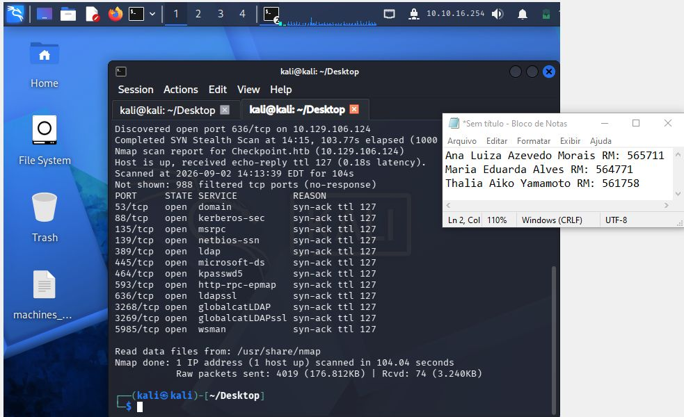

→ Após iniciar a vpn, e arrumar o /etc/hosts, começamos com um nmap:
nmap 10.129.106.124 -vvv

Explicação:
A varredura realizada com o Nmap identificou o host Checkpoint.htb (10.129.106.124) como ativo, apresentando 12 portas TCP abertas. Entre os serviços identificados estão DNS (53), Kerberos (88), LDAP (389), SMB (445), LDAPS (636), Global Catalog (3268/3269) e WinRM (5985).
A combinação desses serviços indica características de um ambiente Windows Server com Active Directory, sendo provável que o host desempenhe a função de Controlador de Domínio (Domain Controller). Os resultados obtidos fornecem informações relevantes sobre a infraestrutura e servem como base para etapas posteriores de enumeração e análise de segurança.
nmap 10.129.106.124 -vvv -sV
Explicação:
A varredura realizada pelo Nmap identificou o host DC01, com o nome de dominio checkpoint.htb, com sistema operacional Windows, associado ao domínio checkpoint.htb, também foram identificados serviços como DNS, Kerberos, RPC, NetBIOS, SMB e LDAP, incluindo o Active Directory LDAP e o Global Catalog.
A presença desses serviços confirma um ambiente Windows Active Directory, indicando que é um Domain Controller, também indentificamos versões e serviços disponíveis que são informações relevantes para a compreensão da infraestrutura e para futuras explorações.
→ Vamos descobrir se o guest pode ser autenticado sem senha:
netexec smb checkpoint.htb -u guest -p ""
→ Após o erro, foi utilizado um comando um pouco mais específico e direto, para garantir que a informação estava correta:
smbclient -L //10.129.106.124 -U 'guest%'


Explicação:
Foi realizada uma tentativa de autenticação no serviço SMB utilizando a conta Guest com senha vazia, o servidor retornou NETBIOS timeout, para conferir foi usado outro comando semelhante e o servidor retornou o código NT_STATUS_ACCOUNT_DISABLED, indicando que a conta Guest encontra-se desabilitada no sistema. Dessa forma, não foi possível realizar autenticação ou enumerar os compartilhamentos SMB utilizando essa conta.
netexec smb checkpoint.htb -u alex.turner -p 'Checkpoint2024!'

Explicação:
Podemos obter o acesso com as credenciais fornecidas, agora será possível realizar a exploração de forma mais eficaz.
netexec smb checkpoint.htb -u alex.turner -p 'Checkpoint2024!' --shares

Aqui podemos diversos diretórios, agora nós temos mais informações para explorar e identificar.
→ Tentamos entrar na pasta ADMIN$ → Acesso negado.
smbclient //checkpoint.htb/ADMIN$ -U "alex.turner"
→ Tentamos entrar na pasta C$ → Acesso negado.
smbclient //checkpoint.htb/C$ -U "alex.turner"

→ Tentamos entrar na pasta DevDrop → conseguimos entrar, não possui nenhum arquivo.
smbclient //checkpoint.htb/DevDrop -U "alex.turner"

→ Tentamos entrar na pasta IPC$ → conseguimos entrar, não possui nenhum arquivo para listagem.
smbclient //checkpoint.htb/IPC$ -U "alex.turner"

→ Tentamos entrar na pasta VMBackups → conseguimos entrar, porém, nossa conta não possui permissão para executar comando.
smbclient //checkpoint.htb/VMBackups -U "alex.turner"

→ Tentamos entrar na pasta NETLOGON → conseguimos entrar, mas não temos permissão para executar comandos.
smbclient //10.129.106.124/VMBackups -U "alex.turner"

→ Por último, olhamos a pasta SYSVOL → trouxe algo importante, tem algumas pastas dentro dela, a principal é a de profile, ela nos trás informações das configurações das duas GPOs.
smbclient //10.129.112.77/SYSVOL -U "alex.turner"
→ Primeiro, vemos que possui um diretório na pasta:

→ Para facilitar a exploração usamos o seguinte comando:
recurse on
ls
→ Ele nos mostrou que muitas pastas estavam vazias, facilitando e economizando tempo, então fomos analisar a pasta profile, pois dentro dela contém um arquivo que pode ser importante:


→ Esse é o conteúdo do primeiro arquivo da primeira GPO:

→ Esse é o conteúdo da segunda GPO:

Explicação:
Enquanto exploravamos o SYSVOL, encontramos dois arquivos GptTmpl.inf associados às políticas de grupo do domínio.
O primeiro arquivo contém configurações relacionadas principalmente à política de senhas, bloqueio de contas e autenticação Kerberos, no meio das configurações encontradas estão:
Também foi identificado LockoutBadCount = 0, mostrando que não existe um limite de tentativas falhas configurado para o bloqueio da conta, além disso, o armazenamento de senhas em texto claro e de hashes LM está desabilitado.
O segundo GptTmpl.inf possui configurações relacionadas à proteção das comunicações e aos privilégios do sistema, dentro dele encontramos o uso obrigatório de integridade no LDAP, o arquivo também define diversos privilégios administrativos para grupos específicos.
Dessa forma percebemos que o ambiente possuimuitas medidas de segurança, principalmente na proteção de LDAP, SMB e credenciais, porem, algumas configurações, como o comprimento mínimo de senha e a ausência de um limite de bloqueio por tentativas inválidas, podem apresentar um problema, pois podem representar um problema.
→ Primeiro nos conectamos, após isso rodamos o comando para listar os usuários do domínio
rpcclient -U 'checkpoint.htb\alex.turner%Checkpoint2024!' 10.129.112.77
enumdomusers

Explicação:
Com esse comando é possível identificar usuários cadastrados no domínio, isso é uma informação importante porque nós podemos realizar a exploração desses usuários, quem sabe até acessar algum deles que possui um privilégio maior que o do Alex.
queryuser alex.turner

Explicação:
Essas informações ajudam a entender quem é o usuário, como a conta está configurada e quais características podem ser relevantes.
enumdomgroups

Explicação:
Essas informações permitem o conhecimento no domínio, esses grupos podem ser explorados após a etapa de reconhecimento
querygroupmem 512

Explicação:
Como o grupo de admins possui o RID padrão 512, fomos analisa-lo, foi encontrado a conta de “administrador” e também de um usuário que corresponde a “max.palmer”
→ Mesmo que não seja necessário, vamos passar os RIDs 0x13ed & 0x1f4 para decimal obtemos 5101 & 500, vamos pesquisar por eles.
queryuser 5101

Explicação:
Por se tratar de uma conta vinculada ao grupo de administradores, pode ser que as informações de conta ajude-nos em uma exploração futura.
→ O outro administrador que possui o RID 0x1f4:
queryuser 5101

Explicação:
Igual a outra conta de administrador, as informações desse usuário podem ajudar em algum momento.